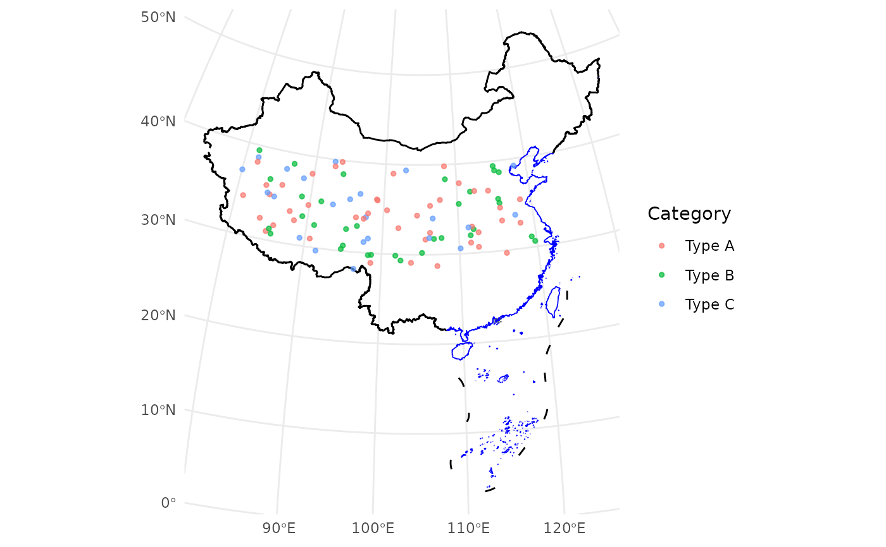

`geom_loc` is a wrapper around ggplot2::geom_sf() designed
for visualizing spatial point data. It supports both sf objects and tabular data frames
with longitude and latitude columns, automatically transforming them into the specified
coordinate reference system (CRS).
Usage
geom_loc(
data,
lon = NULL,
lat = NULL,
crs = "+proj=aeqd +lat_0=35 +lon_0=105 +ellps=WGS84 +units=m +no_defs",
mapping = ggplot2::aes(),
...
)Arguments
- data
A data frame, tibble, or
sfobject containing spatial point data.- lon
A character string. The name of the longitude column in
data(required ifdatais tabular).- lat
A character string. The name of the latitude column in
data(required ifdatais tabular).- crs
A character string. The target coordinate reference system (CRS) for the data. Defaults to
"+proj=aeqd +lat_0=35 +lon_0=105 +ellps=WGS84 +units=m +no_defs".- mapping
Aesthetic mappings created by
ggplot2::aes(), such ascolororsize.- ...
Additional parameters passed to
ggplot2::geom_sf(), such assize,alpha, orcolor.
Value
A ggplot2 layer for visualizing spatial point data, either from an `sf` object or a tabular data frame with longitude and latitude columns, after transforming the data to the specified coordinate reference system (CRS).
Details
This function simplifies the process of visualizing spatial data in ggplot2 by automatically
handling CRS transformations and providing an interface for both sf and tabular data.
If the input is a tabular data frame, it will be converted to an sf object using the
specified longitude and latitude columns.
See ggplot2::geom_sf() for details on additional parameters
and aesthetics.
Examples
# Generate a random dataset with latitude and longitude
set.seed(123)
data_sim <- data.frame(
Longitude = runif(100, 80, 120),
Latitude = runif(100, 28, 40),
Category = sample(c("Type A", "Type B", "Type C"), 100, replace = TRUE)
)
# Visualize the data with China's boundaries
ggplot() +
geom_boundary_cn() +
geom_loc(
data = data_sim, lon = "Longitude", lat = "Latitude",
mapping = aes(color = Category), size = 1, alpha = 0.7
) +
theme_minimal()
